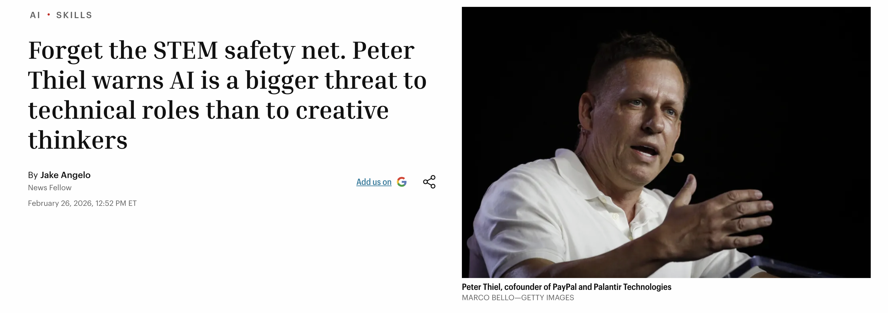

Welcome to Introduction to Generative AI for Education!
Essential links:
Welcome to *Introduction to Generative AI for Education*!
What's this course about? Why does this course exist? In 2026, in some sense, we no longer need a course introducing us to Generative AI - for education or for anything else. It might even seem, for those of us following the latest developments of OpenAI's ChatGPT, Anthropic's Claude, or new agentic systems like OpenClaw, as though we are even reaching the point of *singularity* in the field of education. A point at which, at least for self-paced adult learners, the role of traditional education might be receding into the shadows of tradition itself.
This course will contest this characterization. But in 2026 it can seem difficult to how to approach a technology that has become so popular precisely because it is "professorial". The approach we will take will lean in on the idea that "generative AI" is an object we need to approach from several perspectives or lens. Accordingly, each week after this one will outline one of these perspectives - historical, technological, practitioner, critical, pedagogical and futurological. These lens do not comprise a single coherent doctrine of AI - and I will be encouraging you to notice and document the tensions between them. But they will help us move away from can at times appear narrow discourses of unbridled hope or hopeless fear. By the end of the course, I am hoping these different perspectives will each introduce AI in a way that adds something to your own theory and practice.
For this week there are no readings. We will be introducing ourselves - sharing something of our experiences as researchers and practitioners in AI – and I will also discuss the assessment and structure for the course in more detail. Look forward to seeing you next week!
Additional comments:
The large number of students here already signals a strong interest all the same. It is as though despite the vast volumes of materials about Generative AI - much generated of course by generative AI itself - there is still something we wish to get out of active discussion of the topic.
The course was first run by me last year, and the approach will be largely the same. However I have expanded what was 90-120 minute sessions into a full 2 hours 50 minute session, as I felt we were frequently short of time for discussions and practice. So nominally we'll blocking out the time if we need it - with a 10 minute break roughly half way through.
Each session, including today, will be run as a workshop - a mix of theory / lecture, discussion and practice.
From the course description: https://ldlprogram.web.illinois.edu/overview/course-descriptions/
Explores applications of Generative AI in Education. Topics include: AI predecessors (symbolic, data-driven, and connectionist AI); Large Language Models and statistical approaches to meaning in text; machine learning (supervised, unsupervised and reinforcement learning, including deep learning and neural nets); chatbot architectures and prompt engineering; fine-tuning for domain-specific applications; multimodal AI; guardrails (including managing AI bias, “jailbreaks,” “hallucinations,” explainability, intellectual property, privacy and security); and applications of Generative AI in education
All required material (video lectures, readings etc.) will be provided to students, as per the tentative schedule below.
Why "intervention"? the idea is that we want to identify some kind of problem that unaddressed or question that is unknown. The intervention aims to mobilize AI itself to produce something creative, disruptive, provocative, engaging, critical - this way we will gain both practical knowledge in use of AI and theoretical or critical knowledge about AI in the context of education.
Accordingly, much of our focus in these sessions will be on design-style workshops - thinking through the readings and applying them to a rolling brief of our intervention.
Dr Liam Magee Email: lmagee@illinois.edu No office hours or TA; can meet by appointment. Will aim to be responsive.
Weekly Workshops: Mondays, March 23 to May 4, 5:30 - 8:20
Each session: likely 2x - Theory / Lecture - ~30 minutes - Breakout rooms / Group Discussion / Readings - ~30 minutes - Practice - ~30 minutes - With 10 minute interval
In the spirit of our approach: intervene! Ask questions, make comments, correct, provoke (to a point)!
With lectures: I encourage you to chat / raise hands / ask questions / comment. Lots of material to work through, but hope to keep things dynamic and interactive.
Built around 6 weekly themes:
March 23 - Week 1: Introduction March 30 - Week 2: Historical Lens April 6 - Week 3: Technological Lens April 13 - Week 4: Practitioner Lens April 20 - Week 5: Critical Lens April 27 - Week 6: Pedagogical Lens May 4 - Week 7: Futurological Lens
Aside from this week, each week will have a specific AI theme or "lens" - a way of viewing, understanding and applying AI in the context of education. I'm aware many of you are teachers, and might be undertaking this course with different motives: to think about how to improve lesson plans with AI; to teach students about AI; to develop policies to address AI plagiarism. Alongside their wider scholarly interests, I'm hoping these different lens will offer something novel through which to see these practical issues in different ways - and that you'll also have something to contribute to them.
Key point is really to acknowledge the weekly activities lead up to the final assessment.
All assessments are due Sunday midnight CST of the following week. Six weekly tasks x 5% per cent = 30% overall grade. Each response builds towards the final assessment. Aim to write 300-500 words per week.
Week 2 (due April 5 11:59PM): Brainstorming an “Intervention” Indicative Questions: what about the history of AI has interested you? Are you surprised with where things have arrived at? What is it you feel most needs saying about AI today?
Week 3 (due April 12 11:59PM): Storyboarding Indicative Questions: What about the technical foundations might be important to understand? How much does the non-expert need to know? What format & genre are you thinking about?
Week 4 (due April 19 11:59PM): Practicing AI Indicative Questions: what parts of AI interest you most? Text scaffolding? Code generation? Image / video / music production? Having a “guide”? What are emerging best practices for AI use? and what works for you?
Week 5 (due April 26 11:59PM): Developing an Edge Indicative Questions: what criticisms of AI resonate for you? Are you optimistic some / all can or have been addressed? What, conversely, that no overnight AI update is likely to “fix”? And how will you communicate this in your intervention?
Week 6 (due May 2 11:59PM): Consider the Teaching “Moment” Indicative Questions: what would you want others to know about AI? Is your lesson direct (e.g. “here’s the lesson…”) or indirect (e.g. “something to think about”)? What about this could you carry across to a classroom, and at what levels?
Week 7 (due May 9 11:59PM): Showcasing the Intervention Indicative Questions: how did others respond to your intervention? What worked, and what needs worked? What does your intervention teach us about the future? What did you learn yourself?
These questions will appear week-to-week. They may vary slightly, but the intent should be clear - to offer opportunity to reflect on the course material.
Please enter responses in the shared Google Doc. You are encouraged – but not required - to add comments to other people's responses.
What kind of intervention? Any of the following artefacts [1]: - Presentation (15-20 slides) - A0 Conference Poster - Research Experiment / Paper - School Curriculum - Policy Document - Comic strip - Movie - Mock product pitch / ad campaign for a new AI service - Include details of: products/services; prompts; ~cost (if any - note use of free services is completely fine) - Intervention should involve use of at least 3 of the lens - Respond to a key challenge, question or issue about technology
And a [2] 500-1,000 word reflection / artist’s statement / director’s pitch / researcher’s statement etc (with sources) And a [3] critical 1,000-2,000 word “assessment” of the intervention (follows from week 7 showcase)
Week 8 (due May 16 11:59PM): Refinement, Reflection, Submission
Task: Develop an **intervention** in the field of education that employs AI in a significant but critical way.
What kind of intervention? Any of the following:
- Presentation (15-20 slides)
- A0 Conference Poster
- Research Paper
- Curriculum
- Policy Document
It should aim to integrate something of each of six “lenses” we’ve introduced in this course: historical, technological, practitioner, critical, pedagogical, futurological.
I'll be providing an example case study later in this session.
AI use with acknowledgement is encouraged for the intervention artefact [1] itself. We will be discussing how this might work as we progress through the course. For weekly activities, and for reflection [2] and assessment [3] parts of the final project, it shouldn’t be necessary or desirable.
This course is aimed at providing wide exposure to range of tools as well as readings. Parts of these tools - including these presentations - will be using AI as a way to exemplify some of what we can do with AI. That does raise issues though. I will be checking content for WCAG 2.1 Level AA compliance, but please let me know if any materials are inaccessible.
These will take roughly 1/3 of our time, and should act as bridges between theory / lecture material and practical activities. The End of Coding: Andrej Karpathy on Agents, AutoResearch, and the Loopy Era of AI - YouTube
6 Questions - any or all of:
Introduce yourself - who you are, your professional background, your interest in education, your experience with AI.Break - 10 minutes
What was the Telephone-AI question?
What’s going on in the world of AI today?
In Workshop 4 we’ll be examining criticisms of the environmental and social costs of AI. As a note for now: these differing trends make long term estimation hard to predict.
No easy answers.

Questions to keep in mind:
https://cgscholar.com/posts/1199?communityId=141
End of Week 1! Questions, Comments?